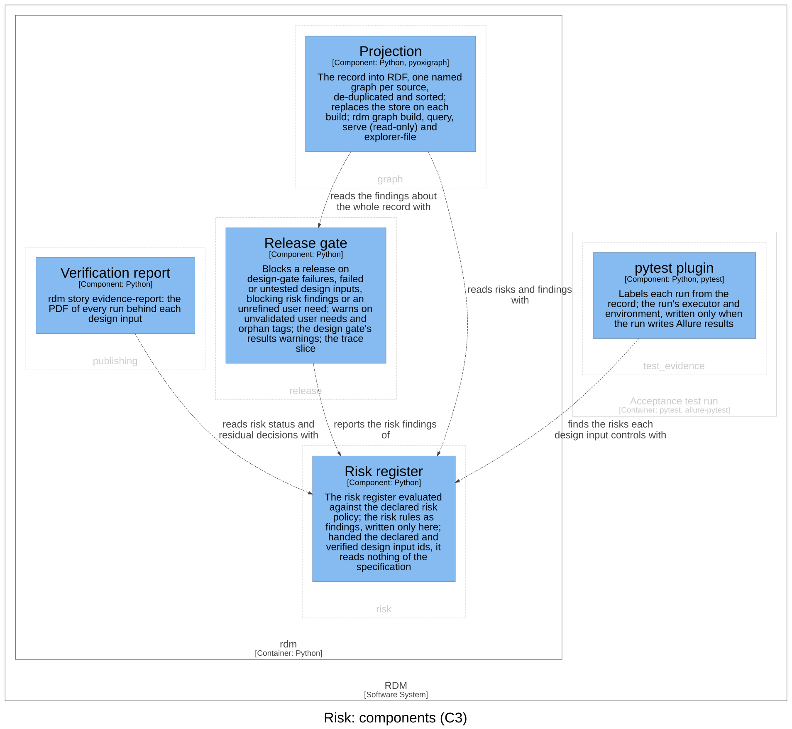

Risk — Software Design¶
Id: SDS-RISK-001 · Kind: design · Context: risk · Download as PDF
Design inputs¶
- DI-43 — RDM shall read the risk register from the frontmatter of kind: risk documents — for each risk its id, category (safety or security), STRIDE category for a security risk, linked risks, hazard, situation, harm, severity, probability, controls (design input ids), residual severity and probability (severity defaults to the initial one), acceptance (who and why) and status (proposed or approved; the document's when the risk gives none) — and evaluate each risk only against a risk policy the project declares (severities, probabilities, a level for each pair, and for each level whether it is acceptable, acceptable only with a recorded justification, or unacceptable), refusing a policy that does not give each pair one level and each level one of those, or a second declared policy, and shipping no default policy.
- Traces to: UN-016
- DI-44 — The release gate shall block when the register has risks and no risk policy is declared or the declared policy is malformed, and on a risk document (other than one that only declares the policy) whose risks are not a list of risks, a risk id declared twice or missing, an empty hazard, situation or harm, a missing or unknown category, a security risk without a STRIDE category, a link to an undeclared risk, a severity or probability the policy does not define, a recorded level other than the policy's, a control that is not a declared design input, or controls with no residual score.
- Traces to: UN-016, UN-003
- DI-50 — The release gate shall block a risk whose residual is not evaluated because a control has no passing test, whose residual — the initial risk when nothing controls it — the policy calls unacceptable, or that the policy accepts only with justification and no acceptance saying who accepted it and why; a risk whose status is neither proposed nor approved shall block, and a proposed risk or policy — one with no status — shall be a warning.
- Traces to: UN-016, UN-003
Purpose¶
This context owns the risk register as part of the design record, and the risk acceptability criteria the register is evaluated against. Its language is risk analysis and risk evaluation: a risk is a hazard, the hazardous situation it leads to and the harm that situation can cause — one harm pathway per risk — with a severity from the harm and a probability from the situation; a safety risk or a STRIDE threat; the risk controls that reduce it, each a design input; the initial risk and the residual risk, the same estimate before and after the controls; and a proposal, a rating or a policy no person has approved yet. The method is the requirements and risk-analysis skills' (user need → safety and STRIDE branches; hazard → situation → harm; evaluate, control, verify, evaluate again). This context keeps the register and checks what a machine can check.
Design Outputs¶
The design outputs are this context's architecture in the C4 model of the architecture workspace: its one component, what it is responsible for, and how the components of other contexts use it. They name components, never the code: the workspace maps each component to its code.

| Component | Responsibility | Meets |
|---|---|---|
| Risk register | Reads the declared risk policy (refusing a second) and the register, evaluates each risk's initial and residual risk against the policy, gives each risk its residual decision, and writes the risk rules as findings, each blocking or a warning and tied to the risk it is about | DI-43, DI-44, DI-50 |
The register is the frontmatter of kind: risk documents — the record
interface authors write, with one entry per risk:
risks:
- id: RISK-TOOL-001
category: safety # or security, with stride:
linked: [RISK-TOOL-002] # optional: risks it bears on
hazard: "What could go wrong, and the sequence of events"
situation: "The hazardous situation"
harm: "Who is hurt, and how"
severity: Serious # from the harm
probability: Possible # from the situation
level: Medium # optional; must be the policy's level
controls: [DI-40] # each control is a design input
residual: {probability: Rare} # severity optional: the initial's
acceptance: {by: "...", rationale: "..."}
status: proposed # until a person approves the rating
The rules the Risk register applies, which a reviewer needs to judge it:
- The policy. The project declares at most one risk policy (a
risk_policyin the frontmatter of a record document; the first by path is the one read). A policy that does not give a level for every pair, or an acceptability for every level, is one blocking finding naming its document, and the register is not checked further until it is fixed. The policy's status is its document's; an unapproved policy is a warning. A policy that lists a severity or a probability twice is malformed: one pair would have two levels. - Evaluation. With no policy no risk is evaluated, and a register with
risks blocks. A risk with no controls keeps its initial risk as its
residual risk, whatever residual it declares: only a control reduces a
risk. A hazard, situation or harm is text; anything else is empty. A
control or a link written as one value, not a list, is that one value.
The policy's severities may be numbers as well as names. A risk's status is its own, else its
document's, else proposed: no status is never read as approved. A risk id
is text or a number; anything else is no id. A recorded
level, initial or residual, must be the policy's. - The residual decision is one of: not evaluated (no policy, no residual level, or a control without a passing test), acceptable, accepted (a level the policy accepts only with justification, with who accepted it and why, both text), needs acceptance, or unacceptable. Only acceptable and accepted let a release through.
- The register. A document of kind
risk(in any case) holds its risks as a list of mappings underrisks; any other shape, or norisksat all, is a blocking finding naming the document, never a register silently left out. A document that only declares the risk policy is not a register. - The findings are every refusal of DI-44 and DI-50, and also a risk whose status is neither proposed nor approved, which blocks. A proposed risk or policy is a warning. The Risk register is the one place these rules are written.
Relationships, in the direction of the arrow:
- The Release gate (
release) reports the risk findings of the Risk register: it adds the blocking findings to its blocking list and the warnings to its warnings. That is the part of DI-44 and DI-50 the release context realises (realisesin its design document). - The Projection (
graph) reads risks and findings with the Risk register — the policy, the register, each residual decision and the findings — into the risks named graph for its gate shapes (DI-45, owned bygraph), so the release gate and the shapes cannot disagree. - The Verification report (
publishing) reads risk status and residual decisions with the Risk register, beside the design inputs that control each risk. - The pytest plugin (
test_evidence) finds the risks each design input controls with the Risk register, to label its test runs.
The Risk register is handed the declared design input ids and the verified ones; it reads nothing of the specification. It parses frontmatter with the shared kernel, which the specification's design document draws.
This context realises no input another context owns; the release context realises part of DI-44 and DI-50, as above.
Assumption: one harm pathway per risk, with one probability; no control effect is recorded apart — the residual is all the controls folded together. Design Review 9 kept the register this small; each can grow later without changing a register written to this format.
Commands and events¶
Each row: the actor issues the command, resulting in its success event or a fail event (the rule broken, after the slash), which affects the entity.
| Actor | Command | Success event | Fail events | Entity |
|---|---|---|---|---|
| The release gate | Assess risks | Risk Evaluated | Not Evaluated / No Policy · Malformed Register · Incomplete · Control Unverified · Residual Unacceptable | Risk register |
Dependencies¶
Layer 1 of the dependency rule, a leaf: it depends only on the shared
kernel, and on no other context. The contexts that use it sit above it:
test_evidence (the pytest plugin), release (the release gate),
publishing (the verification report) and graph (the projection).
Out of scope¶
Whether a risk control is effective is shown in the record only as far as a
machine can see it: the control is verified and the risk, evaluated again,
has an acceptable or accepted residual. Whether the control does what it
claims in the code, whether the rating is right, and whether a residual is
as low as reasonably practicable stay human judgements, made in review and
recorded by approving the rating (status: approved).